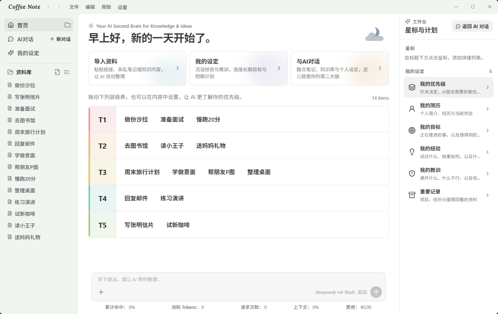
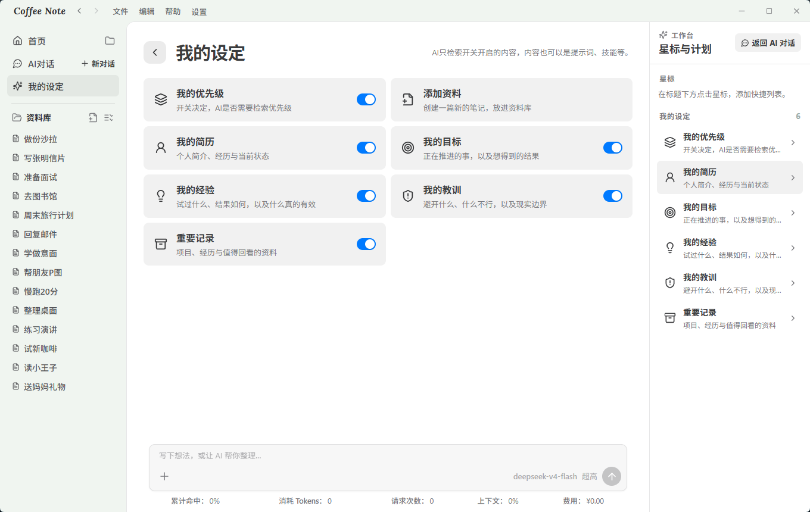
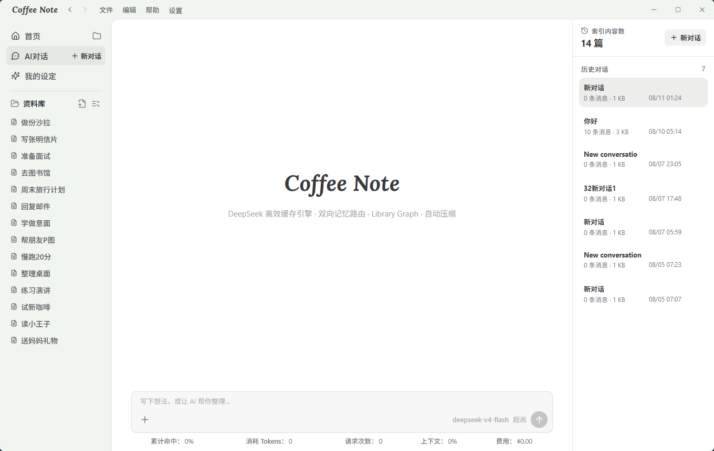
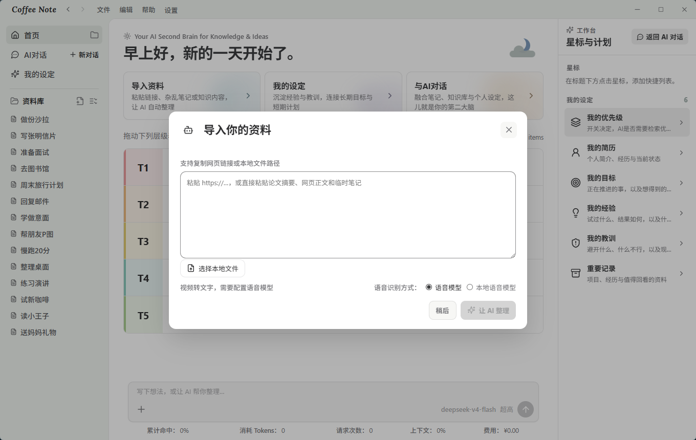
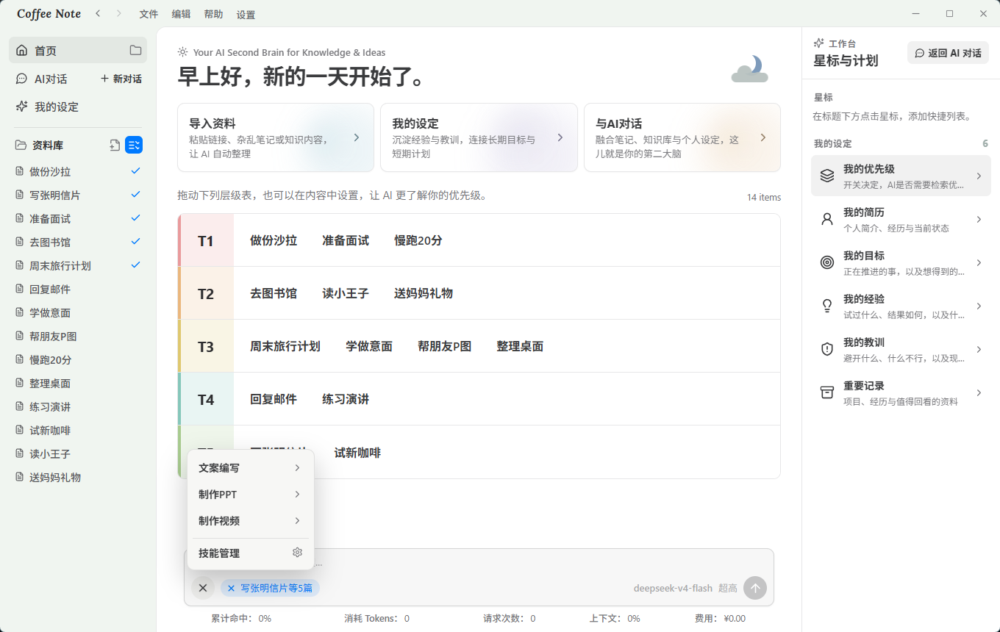

为笔记而生，而不是为工程
- 完成优先的 Agent 循环，重复调用会被阻止
- Library Graph 本地检索，无需嵌入 API 或向量库
- DeepSeek 兼容与缓存友好，成本在对话中可见
- 模型可替换，不锁定任何一家昂贵模型
DeepSeek 高效缓存 · 粘贴抖音/小红书/B站地址转文字 · 生成PPT或视频 · 越用越省钱

Claude Code、Codex、OpenClaw、Hermes，它们是为程序员工程量身定制的。用来管理笔记，既昂贵又没管到位：订阅昂贵的模型额度，只查出几篇笔记？

深度优化 DeepSeek 和其他低价模型。是成本工程，不是降级的省钱模式。
Agent 循环以完成优先：稳定提示词复用供应商前缀缓存，记忆路由只取问题真正需要的部分。

从「看过就忘」到「可搜索、可引用、可复习」。

多选几份笔记，选一个技能，得到一份成品。
选出对这次产出有用的笔记和资料。
生成 PPT、生成视频，技能菜单一键调用。
一条指令从笔记到演示。不复制、不排版。
收进任意内容，用便宜 AI 整理，再让笔记长出新的形态。
